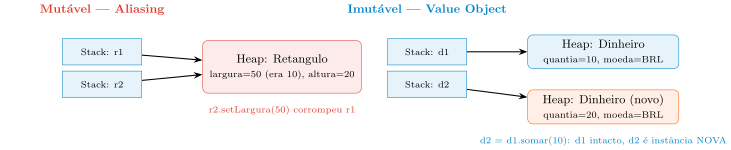

Padrões de Projeto: Vocabulário, Imutabilidade e a Gênese Segura do Objeto
Aula 11 — Programação Orientada a Objetos
2026-09-16
Proposta da Aula
Aula 10 resolveu como o objeto se comporta — o padrão Strategy trocou o if/else de pagamento por uma interface injetável.
O Strategy não foi um golpe de sorte: é um representante de uma família de 23 soluções catalogadas e nomeadas.
Hoje resolvemos como o dado é protegido e como o objeto nasce em segurança — problemas que o Strategy não tocou.
Roteiro: o vocabulário dos padrões → o perigo da mutabilidade → o Value Object → construção segura com Builder → Factory Method e DIP.
O Vocabulário dos Padrões de Projeto
A Origem: da Construção Civil ao Software
Anos 1970: Christopher Alexander, A Pattern Language — catalogou topologias urbanas/arquitetônicas recorrentes.
Engenharia civil não reinventa o formato de uma porta a cada casa; engenharia de software não deveria reinventar como orquestrar objetos dependentes a cada sistema.
O Marco Zero: o Gang of Four (1994)
Gamma, Helm, Johnson e Vlissides — Design Patterns: Elements of Reusable Object-Oriented Software.
23 padrões catalogados, ainda hoje o vocabulário básico da arquitetura moderna.
Quase todos se apoiam em só dois pilares: Composição e Polimorfismo — ambos já dominados por vocês.
O Que É um Padrão de Projeto
Solução arquitetural testada e documentada para um problema recorrente.
Não é código para copiar e colar — é um gabarito conceitual: as peças, as responsabilidades, a topologia das mensagens.
O Que os Padrões NÃO São
Não são frameworks: um framework chama seu código; o padrão é a organização que você dá ao seu próprio código.
Não são algoritmos estruturais: não ordenam nem buscam — resolvem acoplamento e coesão.
Não curam código procedural: pressupõem encapsulamento já estabelecido; aplicados sobre variáveis globais, só mascaram o problema.
A Força Oculta: Vocabulário como Linguagem Ubíqua
Em vez de “crie uma interface comum, isole a execução, injete no construtor do orquestrador”…
…um engenheiro sênior diz apenas: “implemente um Strategy aqui.”
Padrões condensam horas de debate estrutural numa única palavra — a ferramenta de escala dos arquitetos.
As Três Famílias de Padrões

Comportamento = comunicação no tempo (Strategy, State); Estrutural = topologia (Adapter, Decorator); Criação = gênese (Value Object, Builder, Factory Method).
O Paradoxo da Criação
Fail-Fast e invariantes são vitais (Aula 2) — mas quem executa essa validação complexa?
Espalhar new pelo sistema acopla negócio a alocação de memória e a minúcias de inicialização.
Objetivo criacional: o sistema pede um objeto, a fábrica entrega pronto e validado — é isso que o resto desta aula constrói.
O Vocabulário dos Padrões e as Três Famílias
Se um colega descrever uma solução como “uma classe que traduz chamadas de uma biblioteca externa incompatível para o formato que meu sistema espera”, a que família de padrões essa solução pertence — e por que classificá-la pela família certa importa mais do que decorar o nome “Adapter”?
Escreva sua resposta e compare com um colega antes de avançar (2 min).
- □ Uma solução cujo objetivo é permitir que duas interfaces incompatíveis conversem entre si, sem alterar o comportamento interno de nenhuma das duas, se classifica na família Estrutural, não na Comportamental.
- □ Se um engenheiro aplicar rigorosamente a estrutura de classes de um Padrão de Projeto sobre um sistema que ainda usa variáveis globais e funções soltas (sem nenhum encapsulamento), o padrão resolverá o problema de coesão do sistema da mesma forma que resolveria num sistema já orientado a objetos.
- □ Uma biblioteca como o Spring, que instancia os objetos da aplicação e invoca os métodos do desenvolvedor em momentos que ela mesma decide, exemplifica a mesma relação de controle de fluxo que um Padrão de Projeto estabelece com o código do desenvolvedor.
- □ Dois padrões pertencentes a famílias diferentes (por exemplo, um Estrutural e um Comportamental) podem, ainda assim, ser aplicados na mesma classe simultaneamente, resolvendo problemas arquiteturais distintos e não conflitantes.
O Vocabulário dos Padrões — Resposta
Classificando pela família certa — Resposta
- ✔ Uma solução cujo objetivo é permitir que duas interfaces incompatíveis conversem entre si, sem alterar o comportamento interno de nenhuma das duas, se classifica na família Estrutural, não na Comportamental — o foco é a topologia da comunicação, não a distribuição de obrigações no tempo.
- ✗ Se um engenheiro aplicar rigorosamente a estrutura de classes de um Padrão de Projeto sobre um sistema que ainda usa variáveis globais e funções soltas (sem nenhum encapsulamento), o padrão resolverá o problema de coesão do sistema da mesma forma que resolveria num sistema já orientado a objetos — padrões pressupõem encapsulamento já estabelecido; sem ele, a estrutura do padrão só mascara o problema procedural, não o resolve.
- ✗ Uma biblioteca como o Spring, que instancia os objetos da aplicação e invoca os métodos do desenvolvedor em momentos que ela mesma decide, exemplifica a mesma relação de controle de fluxo que um Padrão de Projeto estabelece com o código do desenvolvedor — é o oposto: um framework chama o seu código (inversão de controle), enquanto um padrão é uma organização que você aplica ao seu próprio código, mantendo o controle de fluxo com você.
- ✔ Dois padrões pertencentes a famílias diferentes (por exemplo, um Estrutural e um Comportamental) podem, ainda assim, ser aplicados na mesma classe simultaneamente, resolvendo problemas arquiteturais distintos e não conflitantes — as famílias descrevem o propósito arquitetural predominante de cada padrão, não uma exclusividade mútua entre eles numa mesma classe.
Voltando à pergunta: a solução descrita é um Adapter, família Estrutural. Classificar pela família importa mais do que o nome porque o propósito (harmonizar topologia) é o que orienta a decisão de projeto — o nome é só a etiqueta que vem depois, útil para comunicação rápida entre engenheiros que já concordam sobre o propósito.
O Problema da Mutabilidade e o Fenômeno de Aliasing
A Fragilidade do Estado Mutável
Efeitos colaterais: alterar um atributo aqui reverbera em comportamento inesperado ali.
Acoplamento oculto: objetos que compartilham referência para o mesmo dado mutável na Heap.
Se A e B referenciam o mesmo C, e A altera C, B pode assumir (erradamente) que C não mudou — o aliasing bug.
O Perigo na Prática: Retangulo
r2 = r1 não copia dados — copia o endereço. Um único objeto na Heap, duas portas de entrada na Stack.
O compilador não avisa nada: do ponto de vista da linguagem, nada de errado aconteceu.
A Cópia Defensiva: Remédio Caro
Clonar (new Retangulo(r1)) antes de compartilhar evita a corrupção — mas tem custo real.
Sobrecarrega o Garbage Collector; polui o código com lógica de clonagem em toda fronteira.
Trata o sintoma (uma cópia por vez), não a causa (o objeto ainda pode ser mutado por qualquer um).
Aliasing na Memória: Mutável vs. Imutável

Se o objeto não permite mutação, a única forma de obter um valor diferente é criar uma instância nova — a antiga fica sempre intocada.
O Padrão Value Object
Entidade: Identidade Persistente
Identidade por ID (RA), não por atributo. É natural que o resto mude — a identidade não.
Dois objetos são a mesma entidade se têm o mesmo ID, mesmo com todos os outros campos diferentes.
Value Object: o Padrão do Valor Puro
Identidade por atributo: sem ID — o objeto é o conjunto dos seus valores.
Imutabilidade absoluta: uma vez criado, o estado nunca muda.
Substituibilidade: iguais se o conteúdo for idêntico (equals() por campo, nunca por referência).
Semântica rica: Dinheiro no lugar de double — o tipo já carrega o significado de domínio.
Dinheiro: um Value Object Completo
public final class Dinheiro {
private final double quantia;
private final String moeda;
public Dinheiro(double quantia, String moeda) {
if (quantia < 0) throw new IllegalArgumentException("Quantia negativa");
this.quantia = quantia;
this.moeda = moeda;
}
public Dinheiro somar(double delta) {
return new Dinheiro(this.quantia + delta, this.moeda);
}
@Override
public boolean equals(Object o) {
if (this == o) return true;
if (!(o instanceof Dinheiro d)) return false;
return Double.compare(d.quantia, quantia) == 0 && moeda.equals(d.moeda);
}
}pedido.getTotal().somar(desconto) nunca corrompe o total antigo — sempre devolve instância nova.
equals()/hashCode() seguem o mesmo contrato da Aula 2 — agora comparando por valor, não por identidade.
Operacionalizando a Imutabilidade
Campos final: referência/valor não reatribuído após o construtor.
Classe final: impede que uma subclasse adicione estado mutável por trás do contrato.
Ausência de setters: caixa preta inalterável após a gênese.
Defesa na cópia: referências internas a objetos mutáveis (Date, List) precisam ser clonadas — senão o mutável “vaza”.
A Obsessão por Primitivos: Anemia Semântica
Confiar em double/int/String para Dinheiro, CPF, Email — o tipo diz como é guardado, não o que significa.
O compilador aceita qualquer valor: int de idade aceita -500 sem reclamar.
Validação migra para o construtor (Fail-Fast) — se o objeto Email existe, ele já é válido em qualquer camada.
Benefícios Arquiteturais da Imutabilidade
Thread-safety inerente: sem escrita, não há condição de corrida nem necessidade de locks.
Raciocínio local: ler um método que recebe um VO não exige investigar mutação “à distância”.
Otimização via Flyweight: reutilizar a mesma instância de um valor comum sem risco de corrupção.
Entidade vs. Value Object
Se um sistema de biblioteca representasse cada exemplar físico de um livro como um Value Object (sem ID, igualdade por atributo), o que quebraria no momento em que dois exemplares idênticos do mesmo título precisassem ser rastreados separadamente (um emprestado, outro na prateleira)?
Escreva sua resposta e compare com um colega antes de avançar (2 min).
- □ Se dois exemplares físicos de um mesmo título tiverem exatamente os mesmos atributos de valor (título, autor, edição), modelá-los como Value Objects tornaria
equals()incapaz de distinguir qual exemplar específico está emprestado e qual está na prateleira. - □ Um
Dinheirode R$ 50 criado numa parte do sistema é sempreequals()a outroDinheirode R$ 50 criado em outra parte completamente diferente do sistema, mesmo sem nenhuma relação de criação entre os dois. - □ Se a classe
Alunopermitisse alterar o valor do camporaatravés de um método público após a construção, isso não comprometeria a modelagem deAlunocomo Entidade, desde quecursocontinuasse mutável. - □ Um sistema de reservas de assento de cinema que precisa saber se o assento B12 da sessão das 20h (especificamente aquele, não outro assento idêntico em atributos) já foi reservado se beneficia de modelar o assento como Entidade, não como Value Object.
Entidade vs. Value Object — Resposta
O que quebra sem identidade — Resposta
- ✔ Se dois exemplares físicos de um mesmo título tiverem exatamente os mesmos atributos de valor (título, autor, edição), modelá-los como Value Objects tornaria
equals()incapaz de distinguir qual exemplar específico está emprestado e qual está na prateleira — é exatamente o preço de trocar identidade por valor: dois VOs com o mesmo conteúdo são, por definição, indistinguíveis. - ✔ Um
Dinheirode R$ 50 criado numa parte do sistema é sempreequals()a outroDinheirode R$ 50 criado em outra parte completamente diferente do sistema, mesmo sem nenhuma relação de criação entre os dois — é exatamente a substituibilidade por valor: a igualdade depende só do conteúdo, nunca da origem. - ✗ Se a classe
Alunopermitisse alterar o valor do camporaatravés de um método público após a construção, isso não comprometeria a modelagem deAlunocomo Entidade, desde quecursocontinuasse mutável — comprometeria sim: a identidade persistente (o RA) é exatamente o que não pode mudar numa Entidade; permitir sua alteração quebra a garantia central do padrão, independentemente do que acontece com os outros campos. - ✔ Um sistema de reservas de assento de cinema que precisa saber se o assento B12 da sessão das 20h (especificamente aquele, não outro assento idêntico em atributos) já foi reservado se beneficia de modelar o assento como Entidade, não como Value Object — a pergunta de negócio exige identidade persistente, não comparação por valor.
Voltando à pergunta: o rastreio individual de exemplares quebraria — equals() por valor confunde “dois livros com o mesmo conteúdo” com “o mesmo exemplar físico”. A correção é dar a cada exemplar um ID (ex.: número de patrimônio), modelando-o como Entidade; o título do livro (metadados: nome, autor, ISBN), esse sim, pode continuar sendo um Value Object compartilhado por todos os exemplares.
Criação Segura: o Construtor Sujo e o Padrão Builder
Revisão: Fail-Fast na Instanciação
Se algo deve falhar, que falhe o mais cedo possível — o construtor como “segurança” (Aula 2, revisitado).
O Construtor Sujo
Lista longa: ordem de argumentos do mesmo tipo vira aposta.
Estado inconsistente: objeto vazio preenchido depois via setters — nasce “mancando”.
Acoplamento rígido: new espalhado vincula negócio à classe concreta.
O Padrão Builder: Construção Passo a Passo
Objeto intermediário que acumula dados e só ao final produz a instância alvo.
Ideal para objetos imutáveis com muitos parâmetros — legibilidade e segurança sem sacrificar a imutabilidade.
Cada método retorna this — o encadeamento é só açúcar sintático sobre “configure e devolva-se”.
Implementação Completa: PedidoBuilder e Pedido
public final class Pedido {
private final String cliente;
private final double valorTotal;
private final boolean urgente;
// Construtor privado: so o Builder tem permissao para instanciar
private Pedido(PedidoBuilder builder) {
this.cliente = builder.getCliente();
this.valorTotal = builder.getTotal() - builder.getDesconto();
this.urgente = builder.isUrgente();
}
}public class PedidoBuilder {
private String cliente;
private double total;
private double desconto;
private boolean urgente = false;
public PedidoBuilder paraCliente(String nome) { this.cliente = nome; return this; }
public PedidoBuilder comItem(String nome, double preco) { this.total += preco; return this; }
public PedidoBuilder comDesconto(double valor) { this.desconto = valor; return this; }
public PedidoBuilder urgente() { this.urgente = true; return this; }
public Pedido build() {
if (cliente == null || cliente.isBlank())
throw new IllegalStateException("Pedido deve ter um cliente.");
if (desconto > total)
throw new IllegalStateException("Desconto maior que o valor total!");
return new Pedido(this);
}
}Construtor de Pedido privado: nenhum código externo instancia sem passar pelo Builder — nem um Pedido “meio pronto” sobrevive.
A Mecânica do Builder, Passo a Passo

build() é o portão único de validação cross-field — nem PedidoBuilder, nem Pedido isoladamente conseguiriam checar “desconto vs. total” sozinhos.
Factory Method e a Inversão de Dependência na Criação
Factory Method: Desacoplando a Classe Concreta
O cliente não deveria precisar saber qual classe concreta instanciar.
Interface de criação define o método; a lógica de decisão fica confinada à fábrica.
A Fábrica na Prática
public class NotificacaoPedidoFactory {
public static NotificacaoPedido criar(String meio) {
return switch (meio.toUpperCase()) {
case "SMS" -> new NotificacaoPedidoSMS();
case "EMAIL" -> new NotificacaoPedidoEmail();
default -> throw new IllegalArgumentException("Meio desconhecido: " + meio);
};
}
}O retorno é sempre a interface NotificacaoPedido — nunca a classe concreta.
Três Benefícios da Centralização
Ponto único de manutenção: WhatsApp novo? Só a fábrica muda, não as dezenas de pontos de disparo.
Encapsulamento de infraestrutura: credenciais SMTP, chaves de API — o cliente nunca as vê.
Polimorfismo real: o cliente interage só com o contrato NotificacaoPedido.
O new como a Cola Mais Forte do Código
Quem instancia uma classe concreta passa a depender dela — testar sem banco real, ou trocar de fornecedor, exige editar a lógica de negócio.
DIP na Criação: a Inversão
Contrato é o rei; a fábrica é injetada; “qual classe instanciar” migra para a periferia do sistema.
Mesma lógica de fronteira do Pagavel na Aula 10 — agora aplicada à criação do colaborador, não ao seu comportamento.
Factory Method e Acoplamento Direto
Se um novo requisito pedir notificação por WhatsApp, por que a resposta correta nunca deveria envolver abrir e editar os 50 pontos do sistema que hoje disparam NotificacaoPedidoFactory.criar(...)?
Escreva sua resposta e compare com um colega antes de avançar (2 min).
- □ Se
ServicoDePedidoschamasse diretamentenew NotificacaoPedidoEmail()em vez de pedir aNotificacaoPedidoFactory, adicionar um novo meio de notificação ainda seria possível sem alterar nenhum código que já dispara notificações. - □ Um sistema de geração de relatórios que decide, em tempo de execução, se deve instanciar
RelatorioPDFouRelatorioExcela partir de uma preferência do usuário, centralizando essa decisão numa única classe fábrica, aplica a mesma lógica estrutural do Factory Method visto em aula. - □ Se
RepositorioPedidosFactorysempre devolvesse a mesma implementação concreta (RepositorioPedidosMySQL), injetar essa fábrica em vez de instanciar diretamenteRepositorioPedidosMySQLnão traria nenhum benefício arquitetural, mesmo pensando em testes automatizados futuros. - □ Um
ServicoDePedidosque recebe umaRepositorioPedidosFactoryno construtor, mas depois usainstanceof RepositorioPedidosMySQLpara decidir se aplica uma otimização específica daquele banco, preserva integralmente a Inversão de Dependência que a injeção da fábrica pretendia estabelecer.
Factory Method e Acoplamento Direto — Resposta
Por que não editar os 50 pontos de disparo — Resposta
- ✗ Se
ServicoDePedidoschamasse diretamentenew NotificacaoPedidoEmail()em vez de pedir aNotificacaoPedidoFactory, adicionar um novo meio de notificação ainda seria possível sem alterar nenhum código que já dispara notificações — falso: sem a fábrica,ServicoDePedidosestá acoplado à classe concretaNotificacaoPedidoEmail; um novo meio exigiria editar todo ponto que faz essa instanciação direta. - ✔ Um sistema de geração de relatórios que decide, em tempo de execução, se deve instanciar
RelatorioPDFouRelatorioExcela partir de uma preferência do usuário, centralizando essa decisão numa única classe fábrica, aplica a mesma lógica estrutural do Factory Method visto em aula — mesmo padrão, domínio diferente. - ✗ Se
RepositorioPedidosFactorysempre devolvesse a mesma implementação concreta (RepositorioPedidosMySQL), injetar essa fábrica em vez de instanciar diretamenteRepositorioPedidosMySQLnão traria nenhum benefício arquitetural, mesmo pensando em testes automatizados futuros — falso: mesmo com uma única implementação hoje, a injeção já permite substituir por um mock em teste sem tocarServicoDePedidos, o quenewdireto jamais permitiria. - ✗ Um
ServicoDePedidosque recebe umaRepositorioPedidosFactoryno construtor, mas depois usainstanceof RepositorioPedidosMySQLpara decidir se aplica uma otimização específica daquele banco, preserva integralmente a Inversão de Dependência que a injeção da fábrica pretendia estabelecer — não preserva: oinstanceofreintroduz conhecimento sobre a classe concreta dentro do módulo de alto nível, exatamente o acoplamento que a injeção da fábrica deveria eliminar.
Voltando à pergunta: porque nenhum dos 50 pontos conhece a classe concreta — todos conversam só com NotificacaoPedido através da fábrica. Uma nova classe NotificacaoPedidoWhatsApp mais uma linha no switch da fábrica bastam; nenhum código cliente precisa mudar, e nenhum risco de quebrar SMS ou Email no processo.
Conclusão
O que Aprendemos
- Padrões de Projeto nascem da arquitetura civil, foram catalogados pelo GoF em 1994, e se organizam em 3 famílias por propósito
- Aliasing corrompe objetos mutáveis compartilhados — o Value Object neutraliza o problema pela raiz, trocando mutação por substituição
- O Builder isola a gênese de objetos complexos numa interface fluente, validando no
build()antes de liberar um produto imutável - O Factory Method confina a escolha de classe concreta numa fábrica — e, levado à fronteira entre camadas, vira a Inversão de Dependência
Próxima aula: o terceiro pilar da estabilidade — o padrão State, contrastado deliberadamente com o Strategy já dominado.
UNICAMP — Instituto de Computação